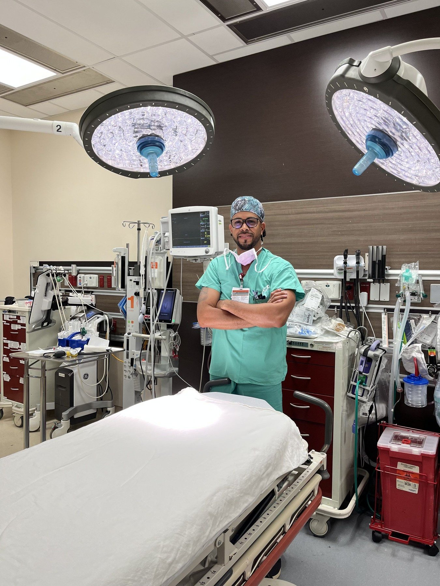

Before the network. Before the cities. Before the rooms full of physicians, founders, and investors - there was a graduation celebration in Miami, hosted by a board-certified trauma surgeon for the people who had stood beside him through training.
Dr. André Coombs hadn't planned to start anything. He had simply gathered the colleagues, mentors, and friends who had shaped him over years of medical training. Around that table, something quieter than a dinner conversation came into focus: the people who had carried him through were the same people who would shape what came next.
The struggles that defined those early years - the financial strain, the isolation that healthcare professionals carry quietly - were real. Dr. Coombs has spoken openly about them since:
I couldn't pay my rent. I was alone, a board-certified surgeon driving DoorDash just to afford to eat - and I didn't know what to do.
Those experiences sharpened the conviction behind FOM: that the relationships physicians need are rarely built inside the institutions where they train. They're built in the rooms in between.
That single dinner became a series. The series became a community. The community became Friends of Medicine - a curated network now anchored in Miami and expanding to five new cities in 2026.
What hasn't changed is the original premise: bring the right people into the right rooms, and meaningful things happen.
The people who shape healthcare don't always meet each other. The physician-founder. The investor with capital. The wellness operator. They all exist in their own silos. Friends of Medicine is the room they share.
Dr. Coombs is an active board-certified trauma and acute care surgeon based in South Florida. The clinical work continues - the operating room, the night calls, the patients who arrive when no one else can help. That's not a past life. It's the work that anchors everything else.
He founded Friends of Medicine in 2019 after recognizing what most networks miss: that the relationships that sustain healthcare professionals are rarely built inside the institutions where they trained. They're built in the rooms in between.
Today he leads FOM's expansion across the U.S. - building the network he wishes had existed during his training years, for the next generation of physicians, founders, and operators advancing human health.
There's only one way to know if FOM is your room - start the conversation.